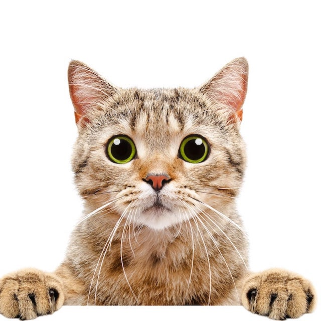
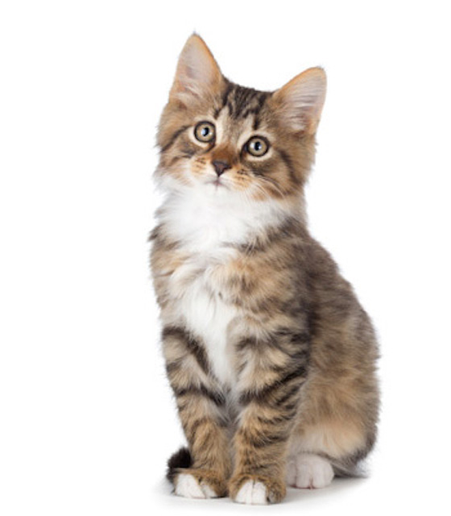

Cats
These cuties vary with personalities and are great companions!


Cats are a domestic species so they make great pets. They sleep most of
the day and are more active during the night. They like to be quiet and
hunt their prey by sneaking up on them. It's usually pretty adorable
unless it's a mean cat. They can be scary.
Fun Facts
They can jump up to six times their length.
Cats have more bones than humans.
They can sleep up to 12-16 hours in a day.
via GIPHY
💗